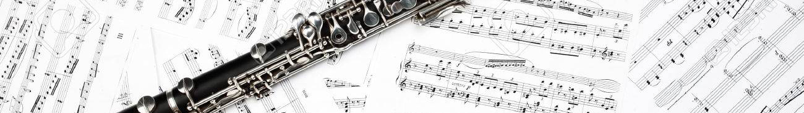
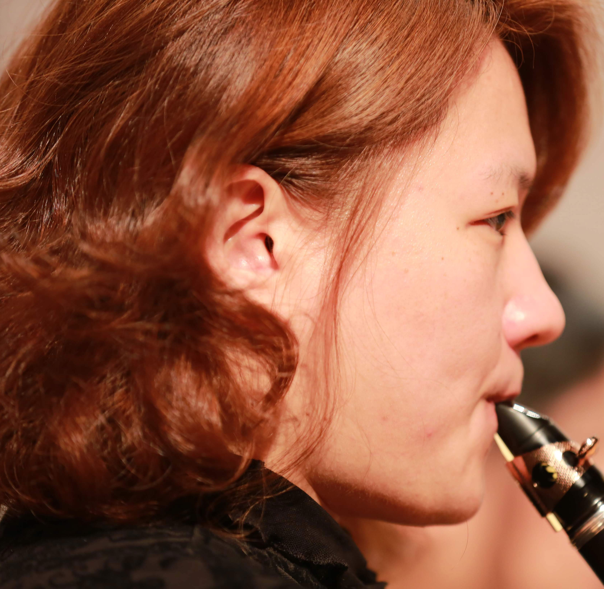

大新竹管樂團 x 一人一故事
分享音樂與生活的點點滴滴
大新竹管樂團一人一故事，每個團員有自己的成長之路，在這些音樂靈感的背後有甚麼有趣的故事和生活片段呢？
透過每月一次的樂人專題，邀請大新竹管樂團的成員，親自和你分享他們的日常點滴與音樂故事！從趣味到感性；
從過往到現在無所不談，讓你聽見每個音符背後那最真實的音樂人生。

收聽列表

主持人：大新竹管樂團
製播單位:IC之音
HSINCHU WINDS SOUND OF STORY


許瑜真：大新竹管樂團的創團分享
節目介紹
曾擔任新竹市立愛樂管絃樂團長笛首席，新竹青年管樂團長笛首席。目前為大新竹管樂團團長， 光鮮亮麗的背後卻有著意想不到的奮鬥故事，今天邀請了大新竹管樂團的首席，邀您共同來聆聽她的精彩故事吧！
- Hsinchu Winds ［大人物專欄］許翠芸：音樂改變了我！成為大新竹管樂團首席的生活
- Hsinchu Winds ［純音樂分享］一天的開始：放下內心的嘈雜，感受寧靜的自然山果
- Hsinchu Winds ［通勤隨身聽］打卡小職員變身自然音樂大師
- Hsinchu Winds ［客家傳知音］回家吧！音樂把我們帶到最原始也最純粹的地方
- Hsinchu Winds ［一人一故事］陳為伶：為孩子種下第一顆創意種子
- Hsinchu Winds ［IC之音］音樂故事─不會游泳的青蛙；大新竹管樂團【輕旅行‧海洋】專訪
- Hsinchu Winds ［大人物專欄］許翠芸：音樂改變了我樂團首席的生活
- Hsinchu Winds ［大人物專欄］許翠芸：音樂改變了我！成為大新竹管樂團首席的生活
- Hsinchu Winds ［大人物專欄］許翠芸：音樂改首席的生活
- Hsinchu Winds ［大人物專欄］許翠芸：音樂改變了我！成為大新竹管樂團首席的生活
- Hsinchu Winds ［大人物專欄］許翠芸：音樂改變了我！成為大新竹席的生活
- Hsinchu Winds ［大人物專欄］許翠芸：音樂改變了我！成為大新竹管活
- Hsinchu Winds ［大人物專欄］許翠芸：成為大新竹管樂團首席的生活
- Hsinchu Winds ［大人物專欄］許翠芸：音樂改變了我！成為大新竹管樂團首席的生活